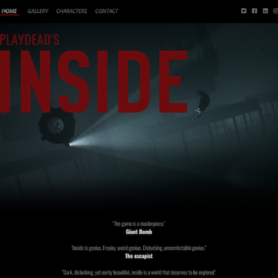
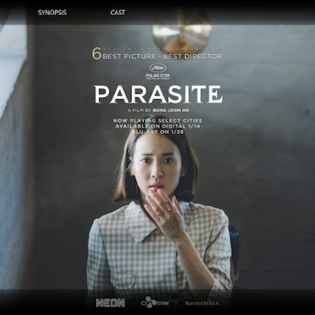

Eksempler på opgaver og kode
Spil site

Spil siden er det første projekt vi fik på grundforløbet. Opgaven bestod på at lave en side for spillet "INSIDE"
Her kan man se lidt af HTML koden brugt på projektet
Parasite

Parasite projektet er den anden større opgave vi fik på grundforløbet. Opgaven bestod på at lave en side for filmen "Parasite"
Her kan man se lidt af HTML koden brugt på projektet
Web avis

Web avisen er det tredje projekt vi fik på grundforløbet. Opgaven bestod på at lave avis på nettet
Her kan man se lidt af javascript koden brugt på projektet